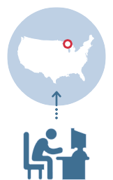
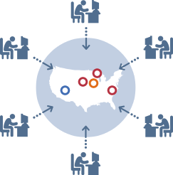
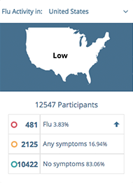

<aside class="container about-tabs">
  <div class="row">
    
    <ul class="tabs-nav">
      <li class="col-xs-6 col-sm-5 col-sm-offset-1">
        <a ng-click="changeTab('tab1')" ng-class="{'active' : tab1==true}" translate="how_it_works_tab"></a>
      </li>

      <li class="col-xs-6 col-sm-5">
        <a ng-click="changeTab('tab2')" ng-class="{'active' : tab2==true}" translate="who_we_are_tab"></a>
      </li>
    </ul>
    
    <div class="tabs-container col-xs-12">
      <div class="tab-content" ng-show="tab1 == true">
        <p class="description" translate="how_it_works_header2"></p>

        <div class="complementary col-xs-12 col-sm-4 col-md-3">
          <h4 class="how-it-works" translate="how_it_works2_did_you_know"></h4>
          <ul>
            <li translate="how_it_works2_did_sub_1"></li>

            <li translate="how_it_works2_did_sub_2"></li>

            <li translate="how_it_works2_did_sub_3"></li>
          </ul>
        </div>

        <div class="complementary col-xs-12 col-sm-8 col-md-9">
          <div class="col-xs-12 col-sm-4 wrapper-figure">
            <figure class="bg">
              
              <figcaption translate="how_it_works_subheader2_1"></figcaption>
            </figure>
          </div>

          <div class="col-xs-12 col-sm-4 wrapper-figure">
            <figure class="bg">
              
              <figcaption translate="how_it_works_subheader2_2"></figcaption>
            </figure>
          </div>

          <div class="col-xs-12 col-sm-4 wrapper-figure">
            <figure class="bg">
              
              <figcaption translate="how_it_works_subheader2_3"></figcaption>
            </figure>
          </div>
        </div>
      </div>

      <div class="tab-content" ng-show="tab2 == true">
        <h4 class="who-we-are">Early detection and early response are key to preventing the spread of any disease.</h4>

        <h5>Makes sense, but how do you detect disease outbreaks in real time?</h5>

        <div class="col-sm-6 nopadding">
          <p>
            While important systems exist for reporting and tracking disease,
            they’re not perfect, missing those who don’t go to the doctor, and a
            bit slowly because it takes time for reports to be collected and sent
            to health departments.
          </p>

          <p>
            We believe that letting individuals report symptoms in real-time can
            complement traditional tracking while providing useful information
            directly to the public.
          </p>
        </div>

        <div class="col-sm-6">
          <figure class="col-sm-6 box-healthmap"></figure>
          <figure class="col-sm-6 box-skoll"></figure>
          <figure class="col-sm-12 box-boston"></figure>
        </div>

        <div class="col-sm-12 nopadding">
          <p>
            Created by epidemiologists at Harvard, Boston Children’s Hospital and
            The Skoll Global Threats Fund, Flu Near You relies on voluntary
            participation from the general public, asking you to take a few
            seconds each week to report if you or your family members have been
            healthy or sick.
          </p>

          <p>
            We analyze thousands of reports and map them to generate local and
            national views of influenza-like illness, providing public health
            officials and researchers with real-time, anonymous information that
            could help prevent the next pandemic.
          </p>

          <p>
            With your help, we can all see what’s coming andbetter still- you
            have the knowledge to protect yourself and your family against disease.
          </p>
        </div>
      </div>
    </div>
  </div>
</aside>
